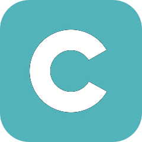
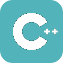
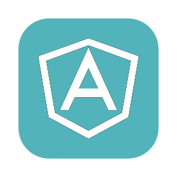
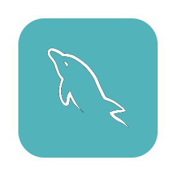
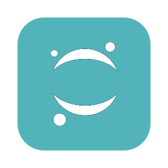
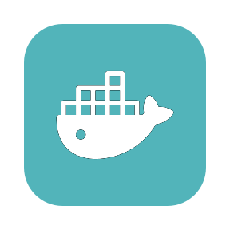

Presently a Software Engineering master's student, I am set to graduate in May 2024 and am looking for full time opportunities.
Join me as I showcase my endeavors and share my love for the art of software development!

ABOUT ME
I am currently pursuing my master's degree in Software Engineering at San Jose State University, with a concentration in Enterprise Software Technologies. I have completed my bachelor's degree in Computer Engineering from Purdue University, West Lafayette, in 2019.
With a passion for programming ignited by years of hands-on experience, I've journeyed through 3 years of real-world projects, honing my skills and embracing the thrill of turning lines of code into innovative solutions.
SKILLS
 
   
WORK EXPERIENCE
Parsons Corporation
Jun 2016 - Jul 2016Worked on Quality assurance for an Information Systems Cost Estimation web app. Developed a database design for a Data Media Management Database project.
TechSera Inc.
Nov 2019 - Feb 2020Attained $50K in paper cost savings by developing a mobile application using TypeScript, Angular, and Ionic to digitize documents.

Intuit Inc.
Mar 2020 - May 2022Revamped and built scalable UI components for the Employee Profile web pages accessed by over 6 million customers, as part of the Intuit QuickBooks Payroll team
Intuit Inc.
May 2023 - Aug 2023Successfully delivered a functional proof of concept using Kotlin Multiplatform Mobile (KMM) for streamlined developer experiences
PROJECTS
AIRPORT MANAGEMENT SYSTEM
Developed a scalable full-stack web application to efficiently track airline and airport data using Agile methodology and design patterns. Deployed the web app on an AWS EC2 instance with auto scaling and load balancing.
Skills:
Full-stack Development, Scalable and Fault-tolerant Systems, User Experience
- Python
- •
- Django REST framework
- •
- Javascript
- •
- React
- •
- MySQL
- •
- AWS RDS
- •
- AWS EC2
- •
- AWS Load Balancing
- •
- AWS Auto-Scaling
HOTEL IDENTIFICATION TO COMBAT HUMAN TRAFFICKING
Project Description:
Created a deep learning model that leverages computer vision, specifically object detection and scene recognition, to identify hotel rooms within a crowdsourced image dataset. This innovative solution aims to combat human trafficking by assisting law enforcement and organizations in locating potential trafficking locations.
Skills:
Deep Learning, Computer Vision, Data Visualization, Data Pre-processing, Model Performance Evaluation and Optimization
- Python
- •
- Jupyter Notebook
- •
- Google Cloud
MUSIC DECADE PREDICTION
Project Description:
Engineered a machine learning model to predict the release decades of songs based on their audio features. This project involved an in-depth exploration of a range of classic machine learning algorithms, including linear and lasso regression, XGBoost regression, as well as LDA (Linear Discriminant Analysis), Random Forest, and Extra Trees classifier algorithms.
Skills:
Machine Learning, Data Processing and Analysis, Model Comparison Experience
- Python
- •
- Jupyter Notebook
- •
- scikit Learn
- •
- pandas
- •
- numpy
- •
- matplotlib
- •
- seaborn
- •
- joblib
IMAGE MORPHER
Project Description:
Designed and developed an interactive Graphical User Interface (GUI) application using Python. This intuitive application creates morphed images by seamlessly blending two input images into a single, artistic representation.
Skills:
Image Processing, Graphical User Interface
- Python
- •
- imageio
- •
- pillow
- •
- numpy
- •
- scipy
ZORK GAME
Project Description:
Created a text-based adventure game inspired by the classic Zork series. This interactive storytelling experience was crafted using C++ and parsing XML files, offering players a diverse range of adventures.
Skills:
Game Development, File Parsing
- C++
- •
- XML
MOCHA - A COMPILER FOR MICRO
Project Description:
Designed and implemented a compiler using C++, Flex, and Bison to translate code written in the Micro programming language into Tiny Assembly. This project covers the essential phases of scanning and parsing while also integrating advanced concepts, including the construction of Abstract Syntax Trees and the implementation of efficient register allocation techniques.
Skills:
Compiler Programming, Lexical Analysis and Parsing, Register Allocation
- C++
- •
- flex
- •
- bison